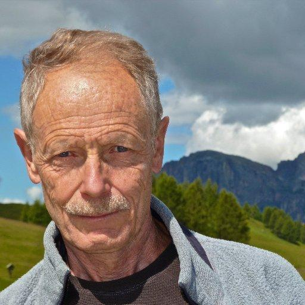
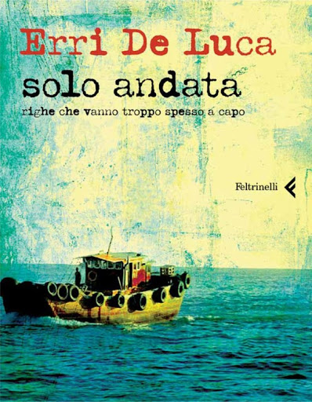

El proyecto
Aquí podremos ver muchas cosas, entre ellas, quiénes son Piero Sacchetto y Erri de Luca.
Piero Sachetto
Este hombre es un artista italiano el cual hace muchos cuadros, y en el cual Erri de luca se ha basado para uno de sus poemas.

Erri de Luca
Este hombre es el poeta el cual se basa en los cuadros de Piero para crear uno de sus poemas, 'Solo andata'.

Solo andata
Este es el poema de Erri de Luca el cual se basa en una obra de Piero Sacchetto